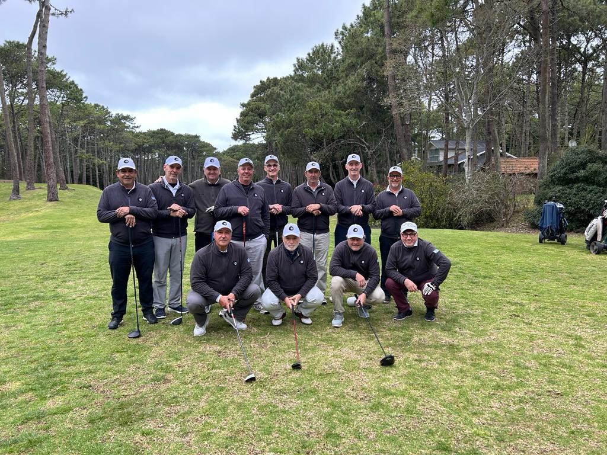

Quienes somos
¡Bienvenidos a Bolilla Negra, donde la pasión por el golf se fusiona con la camaradería y la exquisitez culinaria! Somos un grupo de 12 amigos apasionados por este noble deporte, y estamos emocionados de compartir nuestra historia contigo.
En Bolilla Negra, no solo compartimos la emoción por el golf, sino que también cultivamos amistades duraderas. Somos más que un grupo de golfistas; somos una familia unida por el amor al juego y la diversión compartida.
Cada semana, nos reunimos con entusiasmo en los verdes campos de golf para desafiarnos unos a otros, mejorar nuestras habilidades y disfrutar de momentos inolvidables. Nuestros campeonatos no solo son una competencia, sino también una celebración de la amistad y el espíritu deportivo.
En Bolilla Negra, entendemos que los mejores momentos no solo ocurren en el fairway. Después de cada juego, nos reunimos para compartir risas, historias y deleitarnos con una experiencia gastronómica única. Nuestras comidas y bebidas no solo complementan el día, sino que también son una parte esencial de la experiencia Bolilla Negra, preparadas con esmero para satisfacer hasta los paladares más exigentes.
Este no es solo un grupo de golf; es una comunidad donde todos son bienvenidos, desde principiantes hasta experimentados golfistas. Aquí, la diversidad en habilidades se encuentra con la unidad en la amistad. Todos compartimos la misma pasión por mejorar nuestro juego y disfrutar de la compañía de amigos afines.
 Explora nuestra página web para conocer más sobre nuestras giras por el país, descubrir detalles sobre nuestros campeonatos y aprender más sobre cada miembro de Bolilla Negra. Únete a nosotros en esta emocionante travesía donde el golf se mezcla con la diversión, la amistad florece en cada hoyo, y las comidas y bebidas excepcionales añaden un toque gourmet a nuestra experiencia única.
Explora nuestra página web para conocer más sobre nuestras giras por el país, descubrir detalles sobre nuestros campeonatos y aprender más sobre cada miembro de Bolilla Negra. Únete a nosotros en esta emocionante travesía donde el golf se mezcla con la diversión, la amistad florece en cada hoyo, y las comidas y bebidas excepcionales añaden un toque gourmet a nuestra experiencia única.
¡Bienvenido a Bolilla Negra, donde el golf se encuentra con la amistad y la exquisitez en cada golpe!